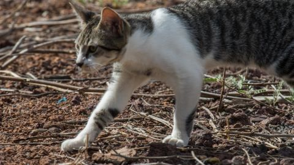

When humans first began settling in the Galapagos Islands nearly two centuries ago, they brought house cats.
Those cats hunted finches, scaring the small birds who were unused to the predator. A decade ago, the cat population was largely removed but the finches still act as if they are in danger, puzzling scientists.
“It suggests the behavior could be hereditary, but it could also be other things such as learning or cultural transmission of behavior,” said Kiyoko Gotanda, a zoologist at the University of Cambridge.
The finches' fearful responses, which scientists call anti-predator behavior, now pose a threat to their survival, according to a Gotanda's study, which was published Wednesday in the Journal of Animal Ecology.
Humans settled on the Galapagos archipelago, famed for its rich biodiversity that inspired Charles Darwin's theory of evolution, in the early 19th century. Apart from cats, settlers also introduced invasive species like rats, dogs, and pigs - which spelled trouble for small native island animals.
These animals, including birds and reptiles, displayed little anti-predator behavior back then because they had never seen these new predators before - they were only used to local predators like owls.
When Darwin visited the islands, which lie 621 miles (1,000 kilometers) from Ecuador, in 1835, he famously got close enough to throw his hat over the birds because they were so unused to humans they didn't see him as a potential threat.
But this “evolutionary naivete” also meant the finches were easily hunted and targeted by the new predators, raising concerns for the biodiversity of the islands, said the study.
The finches eventually did develop anti-predator behavior, learning to fly away when a potential threat approached. And the threat was also lessened over the years - conservation efforts have seen invasive predators cleared and eradicated from four of the archipelago's 19 islands.
It's been a decade since the cats have been gone, but the finches still act like the threat is there.
Gotanda visited two islands that had gotten rid of invasive predators and “pristine” islands where predators hadn't been introduced.
When she mimicked the approach of a predator, finches on the cleared islands flew away at a much greater distance than those on “pristine” islands - suggesting a difference in inherited anti-predatory behavior.
“These surprising results suggest that whatever influences this fearful behavior is more complicated than just the presence or absence of invasive predators,” said Gotanda in a press release from the University of Cambridge.
This heightened survival instinct may now threaten population recovery efforts, the study warned.
“The time and energy finches spend spooking themselves by fleeing when they are not in danger could be better spent looking for food, mating, laying eggs, and rearing their young,” said the press release.
The study may have implications for other animals on the Galapagos Islands, which are home to many endangered and near-extinct species. Earlier this year, a species of giant tortoise believed to have been extinct for more than 100 years was discovered on the Galapagos island of Fernandina.
Other animals like the land iguana, which were wiped out by invasive predators centuries ago, have only just been reintroduced to the islands by conservationists.
The Galapagos were declared a national park in 1959 and a UNESCO World Heritage Site in 1978.